Introduction
This tutorial will demonstrate use of the R commands used in each step of the process to identify network role equivalence introduced in Week 6’s Lecture:
- Cluster data based on distance matrix
- Partition network into positions using clustering results
- Blockmodel Positions
- Plot Positions
We will also introduce available options for choosing a distance matrix, clustering based on distance, and choosing partition cutpoints. * Distance matrices for weighted and unweighted networks * Clustering using structural equivalence, concor, regular equivalence, and criteron-basedgeneralized blockmodeling * Choosing partition cutpoints
We will be using several datasets for this exercise: gotmarr (Game of Thrones marriages), monks; sampson’s monks (which are also available as liking networks at three different timeponts using data(samplk)), flomarr: padgett florentine families, and gotpart (Game of Thrones partners, including marriages and affairs).
- gotmarr.ig - Game of Thrones marriages and engagements igraph network object
gotmarr.stat - Game of Thrones marriages and engagements statnet network object
- gotpart.ig - Game of Thrones marriages and affairs igraph network object
gotpart.stat - Game of Thrones marriages and affairs statnet network object
- flomarr.ig - Floretine Families igraph network object
flomarr.stat - Floretine Families statnet network object
- monks.ig - Game of Thrones marriages igraph network object
monks.stat - Sampson’s monks statnet network object
We will also be creating structural equivalence models for each of these datasets. Replace the word dataset with the name of the dataset. We will learn more about these later in the tutorial:
- dataset.se - default
- dataset.avg.se - cluster method = average
- dataset.sing.se - cluster method = single
- dataset.wrd.se - cluster method = ward.D
Basic Network Description
1. Inspect basic network descriptors
Inspect the network attributes of the flomarr, gotmarr and gotpart and monks networks. For this exercise, refer to Week 1 tutorial. This will help you get familiar with the dataset you are using.
Find network size, type (un/directed, un/weighted, bipartite) and available attributes of vertices and edges
#Find network size and type#Find network size and type2. Inspect the Network Structure
Inspect the dyads, triads, and component structure of the flomarr, gotmarr and gotpart and monks networks (refer to tutorial 2). Pay attention to whether network is connected, as it affects the otions you use for closeness centrality.
#Dyad census, triad census, number and size of components, isolates#Dyad census, triad census, number and size of components, isolates3. Create a network.nodes dataframe
Create a dataframe of standard, applicable node-level measures (from weeks 3-5.) Note that the routine below requires two custom functions to be used for the calculation of derived and reflected centrality. These functions can be included in network analysis files, or turned into a library and loaded like a standard R library.
get.eigen<-function(net, attr=NULL){
#set attr="weight" if weighted network
eigen<-evcent(net)
mat<-as.matrix.network(net, attr=attr)
diag(mat)<-0
mat2<-mat%*%mat
rc<-diag(mat2)/rowSums(mat2)
dc<-1-rc
data.frame(name=net%v%"vertex.names",
eigen=eigen,
eigen.rc=eigen*rc,
eigen.dc=eigen*dc)
}
get.brokerage<-function(net, attr="attr"){
temp<-data.frame(brokerage(net, cl = net%v%"attr")$z.nli)
temp$name=net%v%"vertex.names"
mutate(temp, broker.tot = temp$t,
broker.coord = temp$w_I,
broker.itin = temp$w_O,
broker.rep = temp$b_IO,
broker.gate = temp$b_OI,
broker.lia = temp$b_O)
}With those two functions defined, lets condense the three previous weeks exercises calculating varius measures of centrality into a standard routine, with abbreviated notes on when to use each measure.
#create dataframe with names
#add degree if undirected
#add degree.wt if weighted (and makes sense)
#else add indegree and outdegree if directed
#add sna::bompow for non-singular, unweighted matrix
#else add igraph::power_centrality()
#add betweenness, set gmode for undirected
#add closeness, set gmode for undirected and cmode if not connected
#add constraint (igraph)
flomarr.nodes<-data.frame(name=flomarr.stat%v%"vertex.names",
degree=sna::degree(flomarr.stat,gmode="graph"),
# degree.wt=strength(network.ig),
bonpow=bonpow(flomarr.stat),
betweenness=betweenness(flomarr.stat, gmode="graph"),
close=sna::closeness(flomarr.stat, gmode="graph"),
constraint=constraint(flomarr.ig))
#add eigenvector centrality using custom function
flomarr.nodes<-full_join(flomarr.nodes,get.eigen(flomarr.stat), by="name")
#add brokerage using custom func. if vertex attribute and directed
#doesn't work for this dataset
#network.nodes<-full_join(network.nodes,get.brokerage(network.stat, "attr"), by="name")Exercise: Node Measures dataframe
Now, calculate the same node measures dataframe from one of the other datasets provided this week.
#create dataframe with names
#add degree if undirected
#add degree.wt if weighted (and makes sense)
#else add indegree and outdegree if directed
#add sna::bompow for non-singular, unweighted matrix
#else add igraph::power_centrality()
#add betweenness, set gmode for undirected
#add closeness, set gmode for undirected and cmode if not connected
#add constraint (igraph)
#add eigenvector centrality using custom function
#add brokerage using custom func. if vertex attribute + directed#create dataframe with names
#add degree if undirected
#add degree.wt if weighted (and makes sense)
#else add indegree and outdegree if directed
#add sna::bompow for non-singular, unweighted matrix
#else add igraph::power_centrality()
#add betweenness, set gmode for undirected
#add closeness, set gmode for undirected and cmode if not connected
#add constraint (igraph)
gotmarr.nodes<-data.frame(name=gotmarr.stat%v%"vertex.names",
degree=sna::degree(gotmarr.stat,gmode="graph"),
degree.wt=strength(gotmarr.ig),
bonpow=bonpow(gotmarr.stat),
betweenness=betweenness(gotmarr.stat, gmode="graph"),
close=sna::closeness(gotmarr.stat, gmode="graph"),
constraint=constraint(gotmarr.ig))
#add eigenvector centrality using custom function
gotmarr.nodes<-full_join(gotmarr.nodes,get.eigen(gotmarr.stat, "weight"), by="name")
#add brokerage using custom func. if vertex attribute + directed
gotmarr.nodes<-full_join(gotmarr.nodes,get.brokerage(gotmarr.stat, "attr"), by="name")
head(gotmarr.nodes) #to see your dataframeCalculate Structural Equivalence
In calculating structural equivalence, we are interested in identifying nodes that have the same pattern of ties with the same neighbors. The statnet function equiv.clust() compresses the first two steps of role detection–creating a distance (similarity) matrix and then clustering the nodes on the basis of that matrix–into a single function. The distance matrix is calculated based on the option method= and can be set to different distance functions such as hamming, correlation, hamming, or gamma when using structural equivalence equiv.fun="sedist" as the basis for clustering.
#calculate equivalence from specified distance marix
flomarr.se<-equiv.clust(flomarr.stat, equiv.fun="sedist", method="hamming",mode="graph")While this creates the element in your environment, R won’t print any results from it. The next step of the tutorial evaluates this element.
Exercise: Calculate SE Clusters
Now, create a structural equivalence cluster using one of the other datasets this week: Sampson’s monks, GoT marriages, and/or GoT engagements. Note that although all three of these networks are valued and have a weight edge attribute, the statnet sedist() function used by equiv.clust() ignores the edge values. Later in this tutorial, an alternative approach to calculating sedist that can incorporate edge values is introduced.
#calculate equivalence from specified distance marix#calculate equivalence from specified distance marix
#got marriages:
flomarr.se<-equiv.clust(flomarr.stat, equiv.fun="sedist", method="hamming",mode="graph")
#got partners
gotmarr.se<-equiv.clust(gotmarr.stat, equiv.fun="sedist", method="hamming",mode="graph")
#monks
monks.se<-equiv.clust(monks.stat, equiv.fun="sedist", method="hamming",mode="graph")Dendrogram of SE Clusters
The equiv.clust() command returns an object with several components that will likely be familiar to those of you familiar with hierarchical clustering in general. Lets take a look at the components of the object returned by equiv.clust().
#summary of object produced by sedist()
summary(flomarr.se)## Length Class Mode
## cluster 7 hclust list
## metric 1 -none- character
## equiv.fun 1 -none- character
## cluster.method 1 -none- character
## glabels 16 -none- character
## plabels 16 -none- characterAs you can see, the cluster component is of class hclust. This means that we can plot it in a tree or dendrogram form just like traditional hierarchical clustering output.
#plot equivalence clustering
plot(flomarr.se)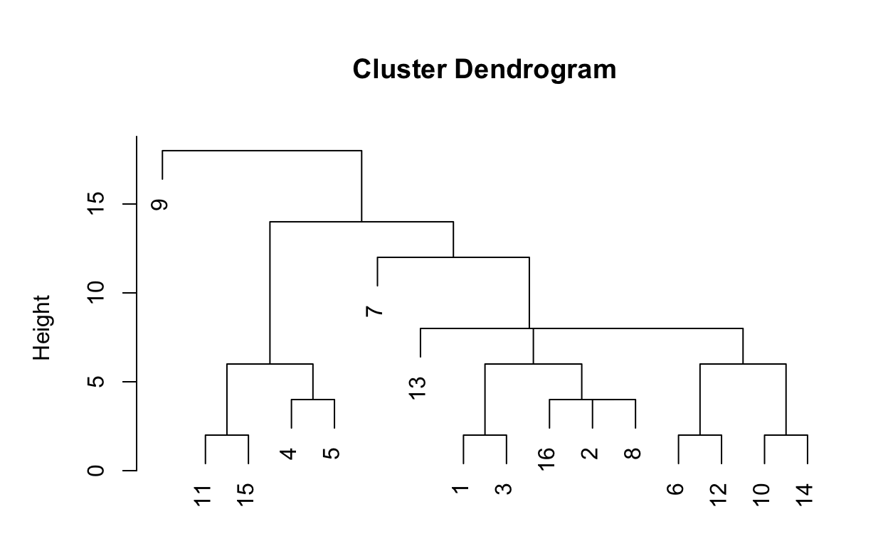
For those not familiar with hierarchical clustering, this is a tree that shows how closely related the nodes are to each other. The height dimension on the y-axis indicates how different the nodes are from each other, with higher numbers indicating a greater degree of difference. The node indices are the numbers appearing on the x-axis. The difference between two nodes is indicated by a link at the specified height. So nodes 11 and 15 are closely related to each other (at a height of around 2), and there is only a small difference between nodes these nodes and nodes 4 and 5. Node 9 is clearly different compared to the other nodes.
If we would like to see the names of the nodes in the dendrogram, we can access vertex names in the clustering object component glabels. The vertex names are automatically reordered correctly.
#plot equivalence clustering
plot(flomarr.se,labels=flomarr.se$glabels)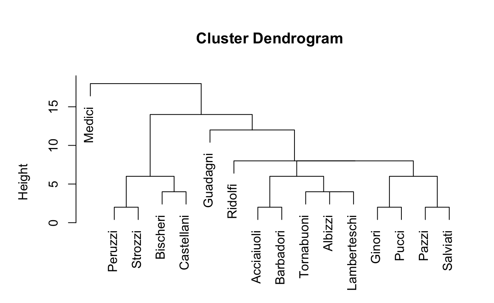
equiv.clust() has a default cluster method setting. See help for hclust() for additional options. You may want to experiment with using different methods for the option equiv.clust(..., cluster.method=""), replacing the default cluster.method="complete" with an alternative such as single, average, or ward.D. How does changing the clustering method change which nodes are closest to each other? For the Florentine Marriages dataset, here are the dedrograms for the alternative settings:
#with average cluster.method
flomarr.avg.se<-equiv.clust(flomarr.stat, equiv.fun="sedist", cluster.method="average", method="hamming",mode="graph")
#plot:
plot(flomarr.avg.se,labels=flomarr.se$glabels)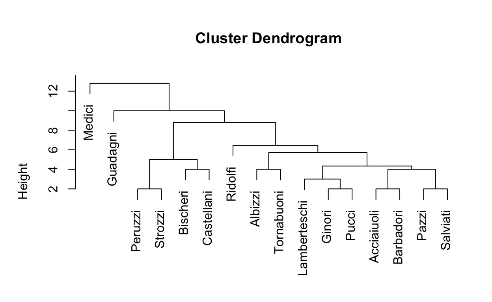
And single:
#with single cluster.method
flomarr.sing.se<-equiv.clust(flomarr.stat, equiv.fun="sedist", cluster.method="single", method="hamming",mode="graph")
#plot:
plot(flomarr.sing.se,labels=flomarr.se$glabels)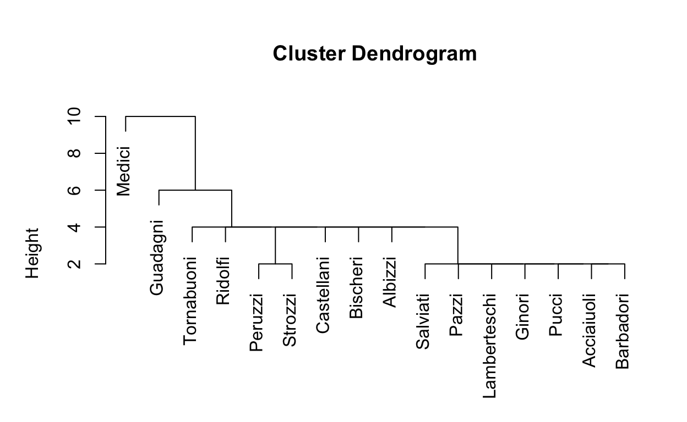
And ward.D:
#with ward.D cluster.method
flomarr.wrd.se<-equiv.clust(flomarr.stat, equiv.fun="sedist", cluster.method="ward.D", method="hamming",mode="graph")
#plot:
plot(flomarr.wrd.se,labels=flomarr.se$glabels)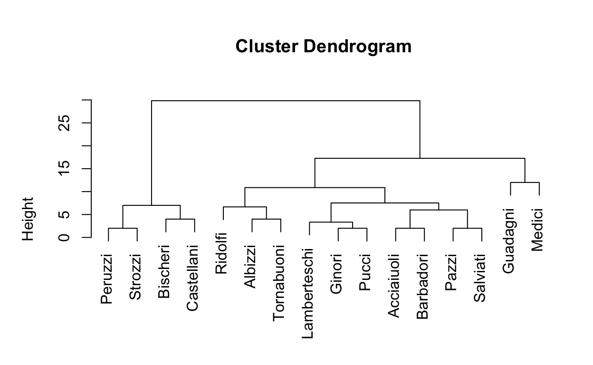
What do you notice about the differences? How does the clustering method change how the data is disaplayed?
Exercise: Dendrogram
Now, inspect the clusters using one of the other datasets this week: Sampson’s monks, GoT marriages, and/or GoT engagements. You may want to experiment with using different methods for the option equiv.clust(..., cluster.method=""), replacing the default cluster.method="complete" with an alternative such as single, average, or ward.D. For this tutorial, we’ve included the .se elements for each dataset with the clustering methods: dataset.avg.se, dataset.sing.se, dataset.wrd.se and, of course, the default dataset.se. Simply replace the name with the dataset you want to explore.
How does changing the clustering method change which nodes are closest to each other?
#plot equivalence clustering#plot equivalence clustering.
#For whichever you choose, compare to the avg sing and wrd cluster methods. To do this, change the data element in the plot() command.
#got marriages
summary(gotmarr.se)
plot(gotmarr.se,labels=gotmarr.se$glabels)
#got partners
summary(gotpart.se)
plot(gotpart.se,labels=gotpart.se$glabels)
#monks
summary(monks.se)
plot(monks.se,labels=monks.se$glabels)Partition a Matrix Using Clustering
Looking at the dendrogram, it is clear that the number of partitions (or roles) will depend on the height at which the dendrogram is cut. For example, we could set the height at 15 and the result would be two clusters.
#plot equivalence clustering
plot(flomarr.se,labels=flomarr.se$glabels)
#partition the clusters
rect.hclust(flomarr.se$cluster,h=15)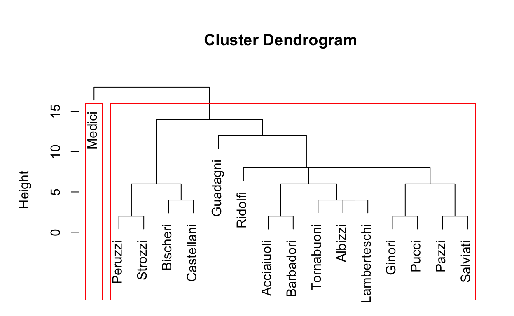
Alternatively, we could set the height at 10, and identify 4 distinct clusters or roles.
#plot equivalence clustering
plot(flomarr.se,labels=flomarr.se$glabels)
#partition the clusters
rect.hclust(flomarr.se$cluster,h=10)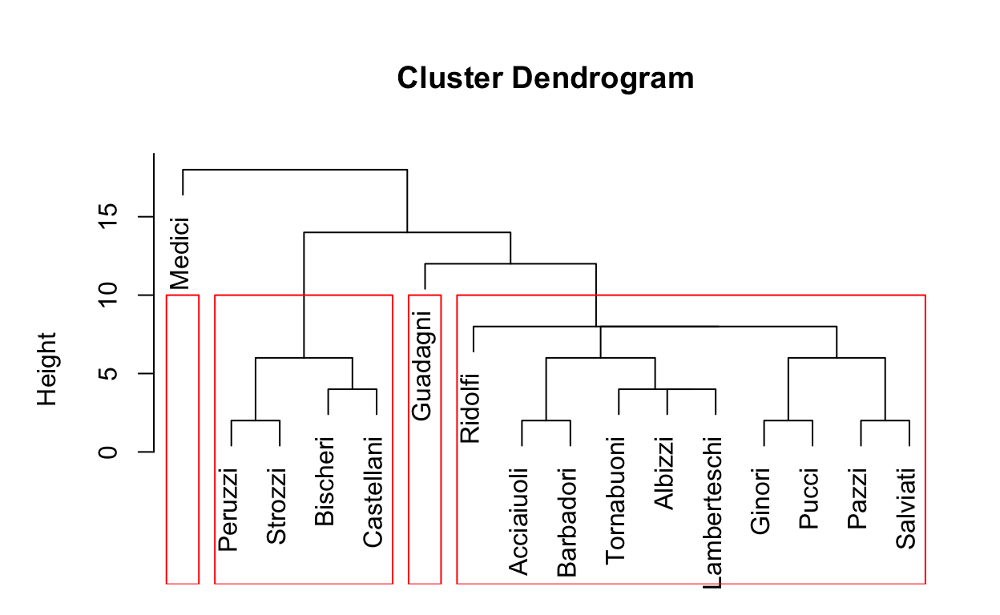
In practice, there are different approaches to identifying the best cutpoint to use as the basis for partitioning, and we explore those in more detail below. For now, we will use the two cutpoints here and visually inspect the resulting partitions.
Exercise: Partitioning Clusters
Now, partition the clusters you have created in the earlier Dendrogram exercise using one of the other datasets this week: monks, gotmarr, and/or gotpart. As in the previous exercise, you can either use the default structural equivalence cluster created for each dataset, or experiment with creating your own equivalence clusters using different clustering methods such as simple, Ward.D or average.
#plot equivalence clustering using default or a different clustering method
#partition the clusters#plot equivalence clustering using default or a different clustering method
#got marriages
plot(gotmarr.se,labels=gotmarr.se$glabels)
#partition the clusters
#gotmarriages
rect.hclust(gotmarr.se$cluster,h=10)
#got partners
plot(gotpart.se,labels=gotpart.se$glabels)
rect.hclust(gotpart.se$cluster,h=10)
#monks
plot(monks.se,labels=monks.se$glabels)
rect.hclust(monks.se$cluster,h=10)Blockmodel Partitions
One easy way to inspect the goodness of fit of the partitions that result from the clustering steps above is to use blockmodeling. This is because the goal of structural equivalence clustering is to create a grid of 0 blocks (where there are no relationships) and 1 blocks (with all possible relationships.) In practice, we usually don’t find perfect 0 and 1 blocks, but we can look at block density and also the visual blockmodel plot to get a sense of how well the partitioning worked. Note that plotting the underlying network as a blockmodel works best with smaller networks, and can become difficult to understand with larger networks.
To implement a blockmodel in statnet, we must specify the original network, the equivalence clustering object to use, and the number of partitions. The option k= in the blockmodel command indicates how many partitions to use in creating the blockmodel. Alternatively, the option h= indicates the height at which to cut the dendrogram.
#blockmodel and select partitions
blk_mod<-blockmodel(flomarr.stat,flomarr.se,k=2)
#print blockmodel object
blk_mod##
## Network Blockmodel:
##
## Block membership:
##
## Acciaiuoli Albizzi Barbadori Bischeri Castellani
## 1 1 1 1 1
## Ginori Guadagni Lamberteschi Medici Pazzi
## 1 1 1 2 1
## Peruzzi Pucci Ridolfi Salviati Strozzi
## 1 1 1 1 1
## Tornabuoni
## 1
##
## Reduced form blockmodel:
##
## Acciaiuoli Albizzi Barbadori Bischeri Castellani Ginori Guadagni Lamberteschi Medici Pazzi Peruzzi Pucci Ridolfi Salviati Strozzi Tornabuoni
## Block 1 Block 2
## Block 1 0.1333333 0.4
## Block 2 0.4000000 NaN#plot blockmodel partitions
plot(blk_mod)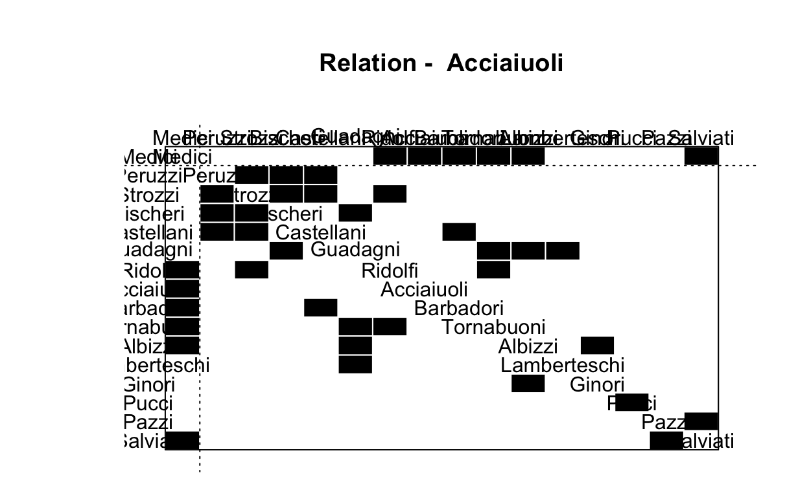
Note that while it is possible to use the simple plot() command to plot the resulting blockmodel object, there are some issues with the plot: the title is strange, and the node labels are difficult to read. Therefore, we are going to create a new function, plot.block(), that is a little more flexible in terms of setting the title and label size for blockmodel plots.
plot.block<-function(x=blk_mod, main=NULL, cex.lab=1){
plot.sociomatrix(x$blocked.data, labels=list(x$plabels,x$plabels),
main=main, drawlines = FALSE, cex.lab=cex.lab)
for (j in 2:length(x$plabels)) if (x$block.membership[j] !=
x$block.membership[j-1])
abline(v = j - 0.5, h = j - 0.5, lty = 3, xpd=FALSE)
}#blockmodel and select partitions
blk_mod<-blockmodel(flomarr.stat,flomarr.se,k=2)
#plot partitions
plot.block(blk_mod,main="Florentine Marriages: 2 Partitions", cex.lab=.5)
Now see what happens when we plot the 5 partitions isolated in the earlier exercise.
#blockmodel and select partitions
blk_mod<-blockmodel(flomarr.stat,flomarr.se,k=5)
#print blockmodel object
blk_mod$block.model## Block 1 Block 2 Block 3 Block 4 Block 5
## Block 1 0.05555556 0.02777778 0.3333333 0.5555556 0.1111111
## Block 2 0.02777778 0.83333333 0.2500000 0.0000000 0.2500000
## Block 3 0.33333333 0.25000000 NaN 0.0000000 0.0000000
## Block 4 0.55555556 0.00000000 0.0000000 NaN 1.0000000
## Block 5 0.11111111 0.25000000 0.0000000 1.0000000 NaN#plot blockmodel partitions
plot.block(blk_mod,main="Florentine Marriages, 5 Partitions", cex.lab=.5)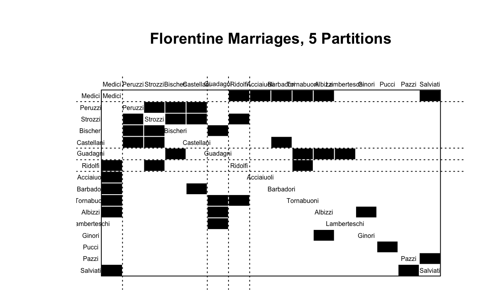
Exercise: Blockmodel Partitions
Now, plot the partitions that you created in the previous exercises using one of the other datasets this week: monks, gotmarr, and/or gotpart. You may want to plot several of them to compare. Did the partitions that made sense when plotted as a dendrogram also make sense when you plot the blockmodel? Are you approaching 0 and 1 blocks in your partitions? Do any of the nodes that don’t quite fit exhibit distinctive behaviors?
#blockmodel and select partitions for one of the other datasets
#print blockmodel object
#plot blockmodel partitions#blockmodel and select partitions for one of the other datasets
#print blockmodel object
#plot blockmodel partitionsPlot Network Roles
When we create a blockmodel object, the component block.membership is used to tell us which role (or block) each node has been assigned. It can be useful to take this information and superimpose it on a traditional network plot. To do this, we will first assign blk_mod$block.membership as a vertex attribute.
#blockmodel and select partitions
blk_mod<-blockmodel(flomarr.stat,flomarr.se,k=5)
#assign block membership to vertex attribute
V(flomarr.ig)$role<-blk_mod$block.membership[match(V(flomarr.ig)$name,blk_mod$plabels)]Now, we can use the role attribute to change the color of plotted nodes in a network plot. Statnet plots aren’t that attractive without using ggnet2, which is what we use here. Alternatively, igraph also produces nice looking network plots by default. For more on producing new network plots in R, see the suggested online tutorials linked on Google classroom.
#plot network using "role" to color nodes: statnet
GGally::ggnet2(flomarr.stat,
node.color="role",
node.size=degree(flomarr.stat, gmode="graph"),
node.label = "vertex.names",
node.alpha = .5)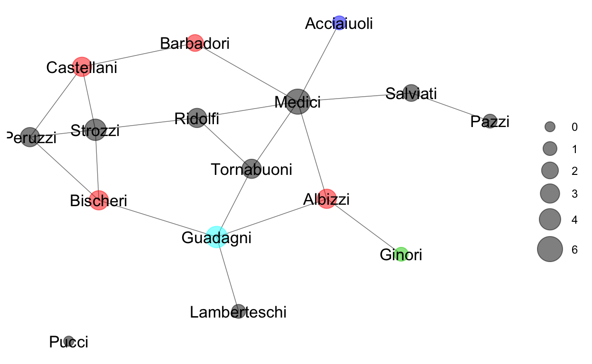
#plot network using "role" to color nodes: igraph
plot.igraph(flomarr.ig,
vertex.color=V(flomarr.ig)$role,
vertex.size=8+(igraph::degree(flomarr.ig)*4))
Additional options can be used to finetune graphics, such as changing the color, making the nodes larger, smaller or more transparent, removing the circles at the nodes and coloring the node labels instead, etc. For directed networks, additional options that might be useful include arrow.size and arrow.gap in ggnet2. When using igraph.plot(), it is helpful to set all margins of the figure to 0 using par(mar=c(0,0,0,0)) but this isn’t necessary using ggnet2.
Exercise: Plot Network Role
#calculate equivalence from specified distance marix
#blockmodel and select partitions
#assign block membership to vertex attribute
#plot network using "role" to color nodes## replace the flomarr element with the dataset of your choice:
#blockmodel and select partitions
blk_mod<-blockmodel(flomarr.stat,flomarr.se,k=5)
#assign block membership to vertex attribute
V(flomarr.ig)$role<-blk_mod$block.membership[match(V(flomarr.ig)$name,blk_mod$plabels)]
#plot network using "role" to color nodes: statnet
GGally::ggnet2(flomarr.stat,
node.color="role",
node.size=degree(flomarr.stat, gmode="graph"),
node.label = "vertex.names",
node.alpha = .5)
#plot network using "role" to color nodes: igraph
plot.igraph(flomarr.ig,
vertex.color=V(flomarr.ig)$role,
vertex.size=8+(igraph::degree(flomarr.ig)*4))Compare Network Role and Centrality
Let’s compare network roles to our centrality values we explored in tutorials 3 and 4. Using the .nodes dataframe that you created in the earlier part of this tutorial, add the network role value. Then, let’s plot the correlations so we can easily compare this value to our centrality values.
Using the flomarr example earlier, let’s repeat the steps and add our blockmod calculations.
###Repeat the blockmodeling and creating the vertex attribute to be able to attach to the .nodes element.
#blockmodel and select partitions
blk_mod<-blockmodel(flomarr.stat,flomarr.se,k=5)
#assign block membership to vertex attribute
V(flomarr.ig)$role<-blk_mod$block.membership[match(V(flomarr.ig)$name,blk_mod$plabels)]
flomarr.nodes<-data.frame(name=flomarr.stat%v%"vertex.names",
degree=sna::degree(flomarr.stat,gmode="graph"),
# degree.wt=strength(network.ig),
bonpow=bonpow(flomarr.stat),
betweenness=betweenness(flomarr.stat, gmode="graph"),
close=sna::closeness(flomarr.stat, gmode="graph"),
constraint=constraint(flomarr.ig),
role=V(flomarr.ig)$role)Exercise: Roles & Centrality
#Repeat the block modeling exercise for a dataset of your choice
#repeat part 3 of basic network structure to create a .nodes dataframe, attaching the role
#add eigenvector centrality using custom function
#add brokerage using custom func. if vertex attribute + directed#Repeat the block modeling exercise for a dataset of your choice
blk_mod<-blockmodel(gotmarr.stat,gotmarr.se,k=5)
V(gotmarr.ig)$role<-blk_mod$block.membership[match(V(gotmarr.ig)$name,blk_mod$plabels)]
#repeat part 3 of basic network structure to create a .nodes dataframe, attaching the role
gotmarr.nodes<-data.frame(name=gotmarr.stat%v%"vertex.names",
degree=sna::degree(gotmarr.stat,gmode="graph"),
degree.wt=strength(gotmarr.ig),
bonpow=bonpow(gotmarr.stat),
betweenness=betweenness(gotmarr.stat, gmode="graph"),
close=sna::closeness(gotmarr.stat, gmode="graph"),
constraint=constraint(gotmarr.ig),
role=V(gotmarr.ig)$role) #final addition of role
#add eigenvector centrality using custom function
gotmarr.nodes<-full_join(gotmarr.nodes,get.eigen(gotmarr.stat, "weight"), by="name")
#add brokerage using custom func. if vertex attribute + directed
gotmarr.nodes<-full_join(gotmarr.nodes,get.brokerage(gotmarr.stat, "attr"), by="name")Structural Equivalence: Weighted
The statnet package version of the command sedist() currently ignores any edge values or weights. Therefore, we will be using the sedist() function available in a different r library called blockmodeling to create equivalence cluster objects for weighted networks. This is a little tricky to implment in your own version of R, as you will need to install the library blockmodeling, and you will also need to transform an igraph graph object into a valued adjency matrix that is a matrix object. The commands you will need to install the package are provided but are not evaluated here as the package is already installed. This demonstration uses Sampson’s monks dataset, where weights are stored as the nominations edge attribute.
#install library
install("blockmodeling")We also need to create a weighted adjacency matrix from an existing network, as the new sedist() function requires a matrix object.
#transform .ig into .mat object
monks.mat<-as.matrix(as_adj(monks.ig,attr = "nominations"))
#inspect for accuracy
monks.mat[1:5,1:5]## John Bosco Gregory Basil Peter Bonaventure
## John Bosco 0 1 2 0 2
## Gregory 3 0 0 0 0
## Basil 3 1 0 0 0
## Peter 0 0 0 0 3
## Bonaventure 1 0 0 3 0In the earlier steps, we established a standard routine for creating a distance matrix, finding an equivalence cluster, partitioning the cluster, and inspecting it visually. There is only one significant change needed for weighted networks: the use of a distance matrix suitable for valued networks, such as euclidean distance or correlation in the initial step. Euclidean distance is traditional, and is the default option.
#calculate equivalence from specified distance marix
monks.sedist<-blockmodeling::sedist(monks.mat)
monks.se<-equiv.clust(monks.stat,
equiv.dist=monks.sedist)It can be useful to combine these two steps also, like this.
#calculate equivalence from specified distance marix
monks.se<-equiv.clust(monks.stat,
equiv.dist=blockmodeling::sedist(monks.mat))Once you have the new equivalence clusters, other steps can be completed as above.
Exercise: Weighted SE Clusters
The GoT marriages and partners networks also have an edge value attribute, “weight”. Using one of these networks or Sampson’s monks, go through the whole role/position extraction routine as developed above. How do the resulting network partitions compare to the ones identified using the unweighted network? Can you interpret any differences you find in the position of specific nodes?
#calculate equivalence from specified distance marix
#blockmodel and select partitions
#print blockmodel object
#plot blockmodel partitions
#assign block membership to vertex attribute
#plot network using "role" to color nodes#calculate equivalence from specified distance marix
#blockmodel and select partitions
#print blockmodel object
#plot blockmodel partitions
#assign block membership to vertex attribute
#plot network using "role" to color nodesCONCOR-based Partitions
CONCOR is an algorithm developed expressly for blockmodeling. CONCOR partitions the network matrix directly using a CONvergence of iterated CORrelations. The algorithm converges to the 0 and 1 blocks that are desirable in structural equivalence relations.
The CONCOR algorithm is currently only available for R in the concoR package, which is only available on GitHub. To install it on your own computer, use the following steps.
#install devtools if needed
if("devtools" %in% rownames(installed.packages()) == FALSE) {install.packages("devtools")}
#install concoR library
devtools::install_github("aslez/concoR")
#load concoR library
library(concoR)The function concor_hca() starts with an adjacency matrix, just like the blockmodeling package, and returns a block membership list, similar to the one returned by blockmodel(). Just as with the blockmodel command, we must indicate the number of desired partitions for CONCOR to return using the parameter p=....
#select partitions with concor
concoR::concor_hca(list(flomarr.mat), p=2)Now, lets take the output from concor and use it to replace the first two steps in our earlier routine as follows.
#select partitions with concor
blks<-concoR::concor_hca(list(flomarr.mat), p=2)
#blockmodel with concor
blk_mod <- blockmodel(flomarr.stat, blks$block, plabels=blks$vertex)
#print blockmodel object
blk_mod$block.model## Block 1 Block 2 Block 3 Block 4
## Block 1 0.0000 0.0625 0.125 0.3125
## Block 2 0.0625 0.0000 0.125 0.4375
## Block 3 0.1250 0.1250 0.500 0.0000
## Block 4 0.3125 0.4375 0.000 0.0000#plot blockmodel partitions
plot.block(blk_mod,main="Florentine Marriages, Concor 4 Partitions", cex.lab=.5)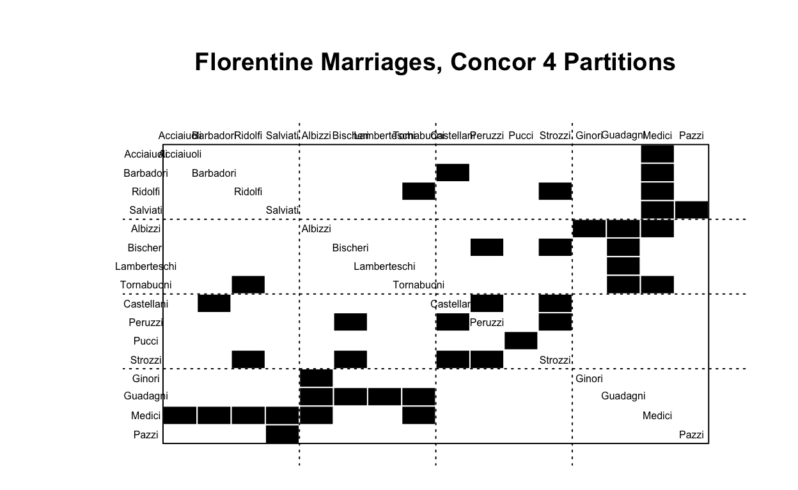
#assign block membership to vertex attribute
flomarr.stat%v%"role"<-blks$block[match(flomarr.stat%v%"vertex.names",blks$vertex)]
#plot network using "role" to color nodes
GGally::ggnet2(flomarr.stat,
node.color="role",
node.size=degree(flomarr.stat, gmode="graph"),
node.label = "vertex.names",
node.alpha = .5)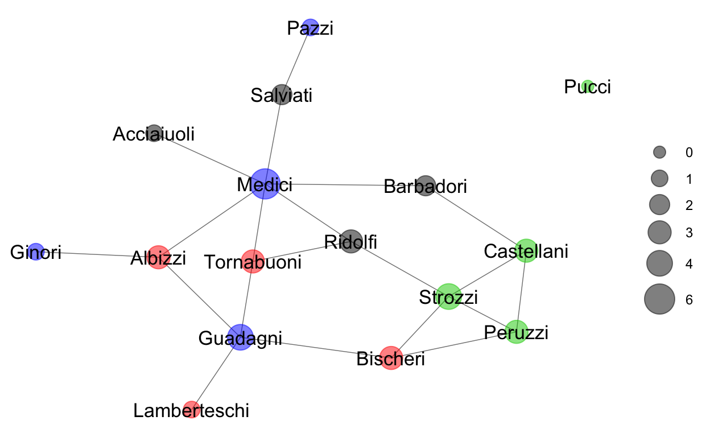
Exercise: CONCOR
Using one of the alternative networks for the week, go through the position extraction routine as developed above. How do the resulting network partitions compare to the ones identified using the hamming distance matrix and hierarchical clustering? Can you interpret any differences you find in the position of specific nodes? Do you think that CONCOR might work better on a different type of network? You may want to repeat this procedure with a different network and see if you are right.
#select partitions with concor
#blockmodel with concor
#print blockmodel object
#plot blockmodel partitions
#assign block membership to vertex attribute
#plot network using "role" to color nodes#select partitions with concor
#blockmodel with concor
#print blockmodel object
#plot blockmodel partitions
#assign block membership to vertex attribute
#plot network using "role" to color nodesOptimization-based Partitions
Much like CONCOR, criteron-based optimization can be used to directly partition a network into structurally equivalent positions. The different blockmodel ideals involving 0 and 1 blocks can be used to set a criteron function for optimization of a blockmodel of a particular network. Unfortunately, it is computationally impossible to directly optimize network partitions relative to a critereon. Instead, different algorithms, such as a tabu search or a nearest neighbor search, can be used and compared to the optimizaton critereon to select the best network partition.
The package blockmodeling includes a function for optimization-based partitioning of a network, optRandomParC(). This function generates multiple initial starting partitions randomly, with the number of starting partitions set by the parameter rep=.... As in other clustering functions, the number of desired partitions must be set using the parameter k=....
At least two additional parameter options are required to specify the criteron to be optimized. The approaches=... option specifies which of several approaches to use, such as “hom” or homogeneity blockmodeling, “bin” or binary blockmodeling, “ss” for sum of squares homogeneity blockmodeling, etc. The blocks=... option is a list of the desired block types, such as “com” for complete, “nul” for the empty block, etc. For more details, see Žiberna, Aleš (2007): Generalized Blockmodeling of Valued Networks. Social Networks, Jan. 2007, vol. 29, no. 1, 105-126.
#select partitions with optimization
blks<-blockmodeling::optRandomParC(flomarr.mat, k=5, rep=10, approaches="ss", blocks="com")##
##
## Starting optimization of the partiton 1 of 10 partitions.
## Starting partition: 3 4 1 4 4 4 4 4 4 4 4 2 4 4 4 5
## Final error: 18.2
## Final partition: 4 5 5 3 3 4 2 4 2 4 1 4 3 4 1 5
##
##
## Starting optimization of the partiton 2 of 10 partitions.
## Starting partition: 3 3 3 2 3 3 3 3 3 3 5 4 1 3 3 3
## Final error: 17.44444
## Final partition: 3 3 3 5 5 1 4 3 4 1 2 1 5 3 2 3
##
##
## Starting optimization of the partiton 3 of 10 partitions.
## Starting partition: 5 3 2 5 5 4 5 1 5 5 5 5 5 5 5 5
## Final error: 18.2
## Final partition: 5 2 2 4 4 5 1 5 1 5 3 5 4 5 3 2
##
##
## Starting optimization of the partiton 4 of 10 partitions.
## Starting partition: 1 1 5 1 2 4 3 1 1 1 1 1 1 1 1 1
## Final error: 17.44444
## Final partition: 1 1 1 2 2 4 3 1 3 4 5 4 2 1 5 1
##
##
## Starting optimization of the partiton 5 of 10 partitions.
## Starting partition: 3 4 3 2 5 2 2 3 2 3 1 1 5 3 4 3
## Final error: 19.52
## Final partition: 3 2 3 1 1 3 2 3 2 4 5 3 2 4 5 2
##
##
## Starting optimization of the partiton 6 of 10 partitions.
## Starting partition: 1 5 4 3 2 3 5 1 4 3 4 3 2 5 1 2
## Final error: 16.69167
## Final partition: 4 4 4 5 5 1 1 1 3 1 5 1 2 4 5 2
##
##
## Starting optimization of the partiton 7 of 10 partitions.
## Starting partition: 5 4 3 2 1 4 1 1 5 5 4 5 2 1 1 1
## Final error: 17.14444
## Final partition: 4 1 4 3 3 2 2 2 5 2 3 2 4 1 3 1
##
##
## Starting optimization of the partiton 8 of 10 partitions.
## Starting partition: 5 5 5 5 5 5 5 5 5 3 1 5 5 5 2 4
## Final error: 16.50556
## Final partition: 1 1 1 5 5 3 2 2 4 3 5 3 1 1 5 1
##
##
## Starting optimization of the partiton 9 of 10 partitions.
## Starting partition: 5 3 2 2 4 5 5 5 1 2 3 3 5 2 4 3
## Final error: 16.50556
## Final partition: 5 5 5 1 1 3 4 4 2 3 1 3 5 5 1 5
##
##
## Starting optimization of the partiton 10 of 10 partitions.
## Starting partition: 5 1 3 2 5 4 4 2 3 3 5 2 4 1 1 5
## Final error: 18.08333
## Final partition: 2 1 2 3 3 2 5 2 5 4 3 2 2 4 3 1
##
##
## Optimization of all partitions completed
## 2 solution(s) with minimal error = 16.50556 found.#blockmodel with optimized partition
blk_mod <- blockmodel(flomarr.stat, blks$best$best1$clu, plabels=rownames(flomarr.mat))
#print blockmodel object
blk_mod$block.model## Block 1 Block 2 Block 3 Block 4 Block 5
## Block 1 0.06666667 0.1666667 0.1111111 1 0.08333333
## Block 2 0.16666667 1.0000000 0.0000000 0 0.12500000
## Block 3 0.11111111 0.0000000 0.0000000 0 0.00000000
## Block 4 1.00000000 0.0000000 0.0000000 NaN 0.00000000
## Block 5 0.08333333 0.1250000 0.0000000 0 0.83333333#plot blockmodel partitions
plot.block(blk_mod,main="Florentine Marriages, Optimized 5 Partitions", cex.lab=.5)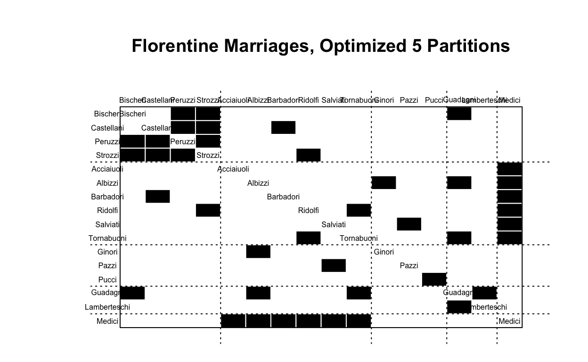
#assign block membership to vertex attribute
flomarr.stat%v%"role"<-blk_mod$block.membership[match(flomarr.stat%v%"vertex.names",blk_mod$plabels)]
#plot network using "role" to color nodes
GGally::ggnet2(flomarr.stat,
node.color="role",
node.size=degree(flomarr.stat, gmode="graph"),
node.label = "vertex.names",
node.alpha = .5)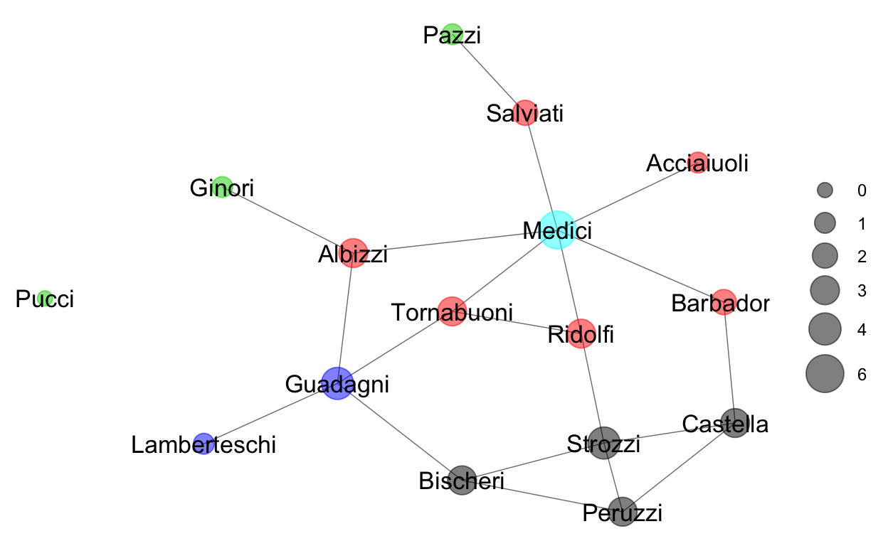
A long list of other options are available, see the help file (online or in R) for more details. Note that the optimization routine is computationally intensive, and large networks (over 100 vertices) can take hours or even days.
Exercise: Optimization
Using one of the alternative networks for the week, go through the position extraction routine using criteron-based partition optimization. How do the resulting network partitions compare to the ones identified using other approaches? Can you interpret any differences you find in the position of specific nodes? You may want to experiment with changes in the options for k=..., approaches=" ", or perhaps using a pre-specified partition set using a different partitioning method or perhaps measures of network centrality such as derived and reflected centrality or gould-fernandez brokerage that approximate network position or role.
#select partitions with optimization
#blockmodel with optimized partition
#print blockmodel object
#plot blockmodel partitions
#assign block membership to vertex attribute
#plot network using "role" to color nodes#select partitions with optimization
#blockmodel with optimized partition
#print blockmodel object
#plot blockmodel partitions
#assign block membership to vertex attribute
#plot network using "role" to color nodesRegular Equivalence
Functional or regular equivalence allows for similarity of relationship patterns without exact neighbor sharing. While intuitively simple to imagine roles such as husband and wife or parent and child, such general roles are computationally difficult to identify. Two algorithms that are often used are CATREGE, or categorical regular equivalence, for directed networks with categorical or binary ties. The REGE algorithm is used for valued ties, either directed or undirected. Geodesic distances can also be used as a distance matrix in REGE even when the original ties are binary.
#calculate equivalence from specified distance marix
flomarr.re<-equiv.clust(flomarr.stat, equiv.fun="redist", method="catrege", mode="graph")
#plot equivalence clustering
plot(flomarr.re,labels=flomarr.se$glabels)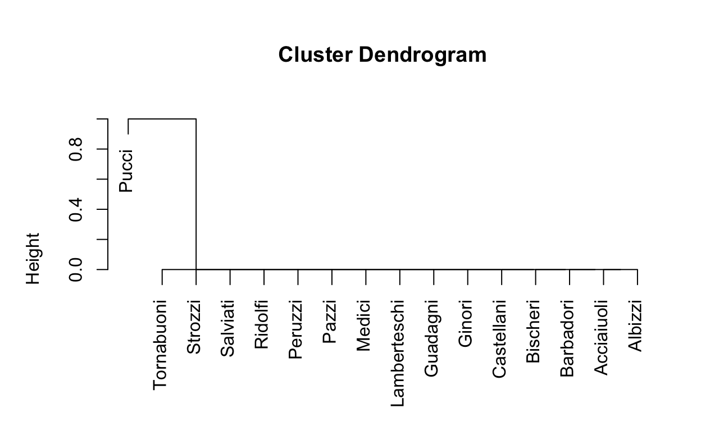
The issue that can clearly be seen is that regular equivalence is pretty uninteresting, at least for an unweighted and undirected graph. One option is to set the option seed.partition=... and provide an initial equivalence partition to serve as a starting point for the algorithm - perhaps a partition obtained using one of the other approaches provided earlier.
REGE(...) and providing a matrix. This algorithm works with valued or weighted networks, but like CATREGE the results are uninteresting for unweighted and undirected networks.